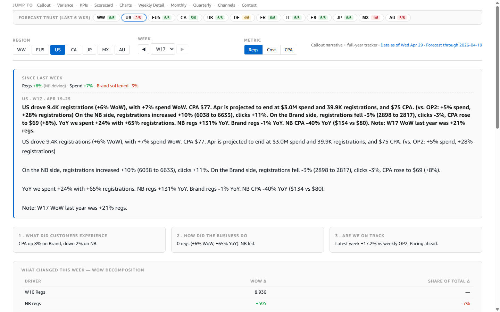
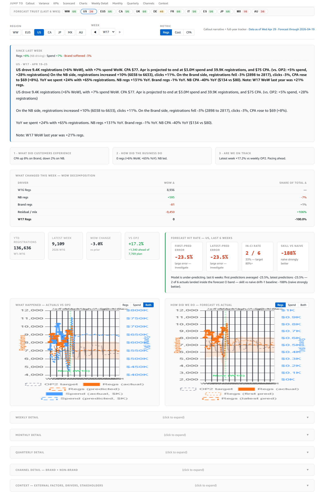
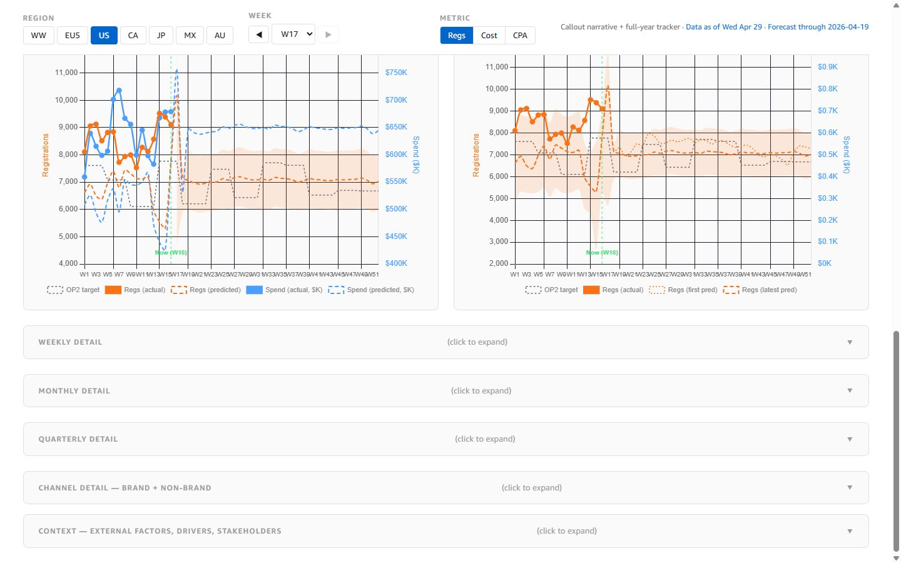
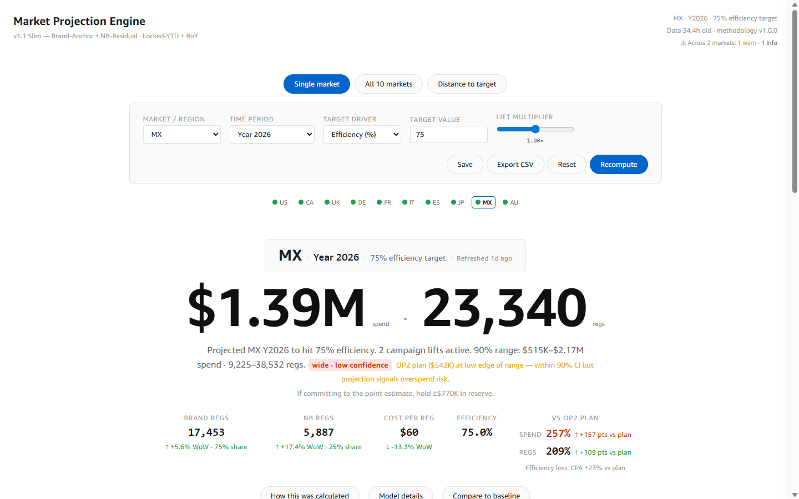
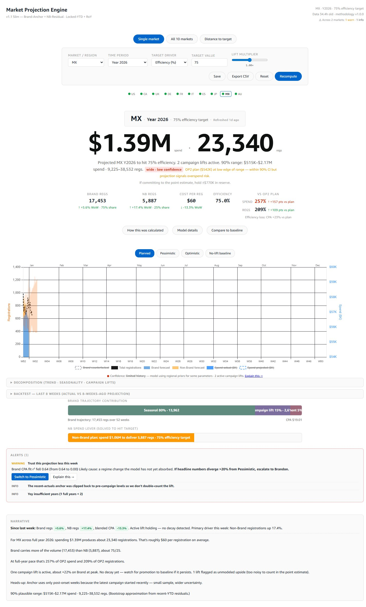
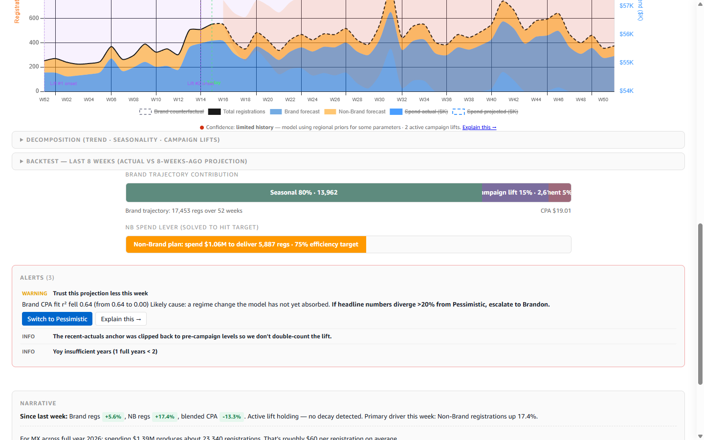

Performance dashboards · redesign research · kiro-local · 2026-04-29
Current state: screenshots, component inventory, and honest notes on what doesn't work. Research: 55 sources from the last ~3 years, biased away from enterprise BI marketing pages and toward Amazon's own WBR practice, Tufte, FT, Observable, The Pudding, Stephen Few, and practitioners on Substack and Hacker News. Output: 100 distinct suggestions, tiered, component-scoped, each with a one-line rationale tied back to a principle or a source.
Both pages render at 1440 wide (Kiro's default Chrome DevTools viewport). Full-page and top-of-fold captures below. The inventory lists every distinct component top-to-bottom as of the 2026-04-29 build.






| Component | Weekly review | Projection engine | Observation |
|---|---|---|---|
| Page header / title | Minimal, text-only | Banner with staleness + alert count | PE header does more work per pixel |
| Sticky status bar (trust / health) | ✓ Forecast trust (12 markets) | ✓ Market health (10 markets) | Both exist — PE's is more information-dense |
| Region / market filter | Separate row (7 buttons) below trust bar | Dropdown in controls row; selection also drives trust bar | WR has the filter twice — once in trust bar, once as buttons. Redundant. |
| Time period selector | Week dropdown + prev/next buttons | Period dropdown (W17/M04/Q2/Y2026/MY1/MY2) | PE supports more time horizons from one control |
| Metric filter | 3 toggle buttons (Regs/Cost/CPA) | Target driver dropdown | WR metric filter may be redundant — see #28 |
| Scenario / lever | — | Lift slider + 4 scenario tiles | WR is historical, no scenarios needed |
| Narrative headline | Dense paragraph, 4 facts in one sentence | Short headline + reserve sub-card | PE headline reads like an executive summary; WR headline reads like a box score |
| KPI cards | 4 cards (YTD / Latest / WoW / vs OP2) | 4 cards (Brand / NB / CPR / Efficiency) + 2-card vs-OP2 row | PE cards are grouped; WR cards aren't |
| WoW decomposition | Table (driver / WoW Δ / share) | Decomposition bar (seasonal / campaign / judgment percentages) | Different decompositions for different jobs — WR is "what moved the number", PE is "what's in the projection" |
| Forecast calibration | Scorecard (first-pred err / latest / in-CI / skill) + chart | Backtest disclosure (collapsed) | WR makes calibration prominent; PE hides it. Good call on WR, but the UI is 4-up cards rather than a chart |
| Primary chart | 2 charts stacked (actuals-vs-OP2, forecast-vs-actual) | Contribution/decay chart (collapsed in disclosure) | WR charts are prominent; PE chart is tucked away |
| Detail / drilldown | 5 disclosure panels (Weekly / Monthly / Quarterly / Channel / Context) | Model view as side drawer | PE's drawer is a better progressive-disclosure pattern |
| Alerts / guidance | — (implicit in forecast-hit narrative) | Explicit alerts block with suggested action | WR is missing the "what to do" line. This is the single biggest gap. |
| Footer / methodology | Small "Data as of / Forecast through" line | Staleness + methodology version in header | PE makes provenance legible |
These are the lenses the 100 suggestions come from. Each principle is tied to 3–5 sources so you can trace back to originals. Content paraphrased for compliance; original phrasings are the property of the cited authors.
font-variant-numeric: tabular-nums on every numeric cell, or use a monospaced font. All current browsers support it; it's one CSS line with outsized scannability gains. (Jo Maendle on date alignment, Medium "Design of Complex Tables", MDN font-variant-numeric.)What you see below is not wired to data — it's a static reference showing the top 900px of the page after the Tier-1 recommendations land. Numbers are the actual W17 US values. Compare this to the current-state screenshot.
Headline · US · W17 · Apr 19–25
Each suggestion carries a tier, a scope pill, a one-line rationale, and a sourced principle where applicable. T1 = ship before next WBR; T2 = worth testing in the next 4 weeks; T3 = nice-to-have or experimental. Scope pill: global, wr (weekly review), pe (projection engine), or exp (experimental).
Same font stack, same muted background palette, same annotation typography, same target/marker styles. The weekly review's ApexCharts defaults feel like a different product.
Principle #17 (aesthetic consistency) · Amazon WBR explicit "same format every week".
font-variant-numeric: tabular-nums to every numeric value site-wide.One CSS line. Every KPI card, every table cell, every axis label gets decimal-aligned columns. Zero aesthetic tradeoff, big scannability win.
Principle #16 · Jo Maendle on date alignment, Medium "Design of Complex Tables".
Sticks to the viewport top when the user scrolls. Both pages already have the component; both need it always-visible.
Principle #9 · parallelhq sticky header guide 2026, smart-interface-design-patterns.
Current trust bar uses neutral tone; switching to a 4-stop scale (≥5/6 green, 3-4 amber, ≤2 red, no-data gray) encodes exception-drivenness in pixel color.
Principle #8 (exception-driven reading), Commoncog WBR, Tufte data-ink.
Any chart with 2–5 series goes from color-chip-in-corner + label-top to color-at-end-of-line. Saves eye-movement, increases retention.
Principle #5 · Data Revelations, Evergreen, Depict Data Studio.
"Forecast vs Actual" → "US model under-predicts by 23% — baseline gap, not regime double-count." The agent already has the language to generate these (WR callout narrative pipeline).
Principle #2 · Urban Institute, Practical Reporting, MIT Sloan "Visually Consumable".
Any card that shows a current value should also show the 6-week trace next to it, no axis, no labels. Zero clutter, +1 dimension of information.
Principle #4 · Tufte sparkline theory, Observable "Big Insights Small Spaces", shadcn sparkline tables.
The projection engine's "Trust this less → Switch to Pessimistic" is the pattern. Weekly review forecast-hit-rate exception deserves "If miss > 20%, escalate to Brandon" prompt baked into the UI.
Principle #10 · Ethos App "Dashboards to Stories", Luzmo State of Dashboards 2025.
The "Callout narrative + full-year tracker · Data as of Wed Apr 29 · Forecast through 2026-04-19" line is three unrelated facts in one run-on. Split: page role goes in title, provenance goes in footer.
Principle #19 · Matt Ström UI Density, smart-interface-design-patterns.
Purple = actual, green = good / on-plan / NB, amber = at-risk / Brand, red = bad / off-plan. One palette, one meaning per color, documented. Currently our two pages don't agree.
nastengraph "Stop Coloring Retention Tables", Stephen Few on consistency, clicdata "Dashboard Design Mistakes".
Two panels side by side: 6 weeks weekly on left, 12 months monthly on right, shared Y, target markers, prior-year ghost line. Both pages adopt this for every trend chart.
Principle #6 · Commoncog Amazon WBR (primary spec), thdpth analysis, 400+ metric review.
Fixed set of footer numbers — WoW%, YoY%, vs-OP2%, 4wk avg, 13wk avg — for every metric. Same six fields every week. Lets the reader pattern-match.
Principle #6 · Commoncog on Amazon's box scores, Eugene Wei on end-of-line labels.
Faded pink/gray line behind the current-year line. Same-week-last-year context is the single most-asked comparison in the callouts and should be always-visible, not derived from text.
Principle #6 · Amazon WBR explicit spec.
8-item horizontal strip of links eats 40px of top-of-fold on every page load. Most users don't use it — collapse to a "sections ▾" menu.
Principle #19 · progressive disclosure (IBM design, IxDF 2026).
Bloomberg / Linear / Superhuman have trained power users to expect single-key navigation. Richard is a power user of this page; 2 keystrokes to move a week is worth 5 minutes a month.
Bloomberg Terminal paradigm, PowerToys Command Palette, Linear keyboard-first design.
Microsoft + every keyboard-first app ships this. One-line addition; discoverability + muscle memory in one.
Microsoft Power BI "Shift+?" convention.
Weekly review URL already has ?market=US&week=W17. Add §ion= and scroll position so a Slack-pasted link lands on the exact panel. Richard already does this manually — formalize.
Practical productivity; arXiv "Functional and Semantic Roles of Text in Interactive Dashboards" 2407.14451.
Current tooltips are text ("US: 6 graded weeks, 2 inside CI"). Replace with a 150×40 floating card containing a sparkline of that market's forecast error over 6 weeks.
Principle #4 + Tableau "Viz in Tooltip", Power BI modern tooltips (GA 2026).
Natural20's research (2026) says true-black is bad, dark-grey #121212 is good. Bloomberg-style pro aesthetic for evening review. Low-effort, optional.
Natural 20 "Designing High-Density AI News Aggregators" — 47-50% of users have astigmatism; halation research.
If Richard ever prints the page for a 1:1 or to read on a plane, it should look like a WBR deck, not a browser tab. Separate @media print CSS, 2 hours of work.
Amazon WBR printed spec, Commoncog explicit.
Richard frequently copy-pastes numbers into Slack or Quip. Give every chart a ⋯ menu with "Copy as table" / "Download PNG".
Eleken "Why Users Ignore Dashboards" — 72% of users export to Excel anyway; meet them halfway.
Looker / Power BI / Observable linked brushing. Right now the market filter only filters some panels; a click should cascade.
Observable "Linked Brushing" 2025, Dawiso cross-filtering, Databricks community article.
If Richard has acknowledged an exception (scrolled past it, clicked it), don't re-show it for 24 hours. Ambient UI, not aggressive UI.
soul.md invisible-over-visible; anti-novelty-effect design.
Opens a panel that shows the underlying SQL / function / data source. Debug + trust + epistemology all in one.
Commoncog WBR — "how is this measured?" is one of Amazon's three most-asked WBR questions; arXiv "Functional Roles of Text".
The sticky trust bar already carries the market axis; adding a second market selector below it is redundant. Click a market badge to select; color already tells you whether to trust the forecast for that market. Collapses 120+ px of vertical space on top-of-fold.
Principle #3 + #9 · Richard's explicit direction; Amazon WBR one-dimensional market axis.
Currently sits above the controls and scrolls away. Pin to position: sticky; top: 0 with the header. Market selection stays visible even when reading the Q/Q detail tables 2,000 px down.
Principle #9 · parallelhq 2026 sticky header guide, Bloomberg persistent status strip.
Today the sub-market row is a separate band. Fold it into the trust bar so the visual grammar stays one-row-of-market-badges whether or not a region is expanded.
Subtraction before addition (soul.md #3) · preserves the "click a badge to switch" model for submarkets too.
Only controls the KPI row. Charts have their own Regs/Spend/Both toggles, narrative is metric-agnostic, variance table always shows regs. Dropping it removes a decision Richard doesn't need to make, and forces the KPI row to show all metrics as side-by-side cards (better density).
soul.md #6 (reduce decisions not options) · Linear dashboards 2025 "fewer filters, more cards".
Replaces the current 4-card row (YTD, Latest, WoW, vs OP2) which is almost all first-derivative. Show level + trend in each card instead of isolating WoW into its own tile.
Principles #4 + #7 · Evidence-dev BigValue component, shadcn stat-hero-metric-with-sparkline, Linear "pair every metric with trailing highs/lows".
Bar = actual, tick = OP2 target, three soft qualitative bands behind (behind/on/ahead). Scannable in under a second; the same number the current card shows, but with visual context baked in.
Principle #15 · Stephen Few bullet chart (2005), Sigma Computing guide, Stacey Barr PuMP Way.
One-line template: "{Market} drove {regs} ({WoW}) on {spend pct} spend. {Channel} led ({pct}); {other} {direction}. Pacing {pct} vs OP2." Deterministic, tweet-length, no prose.
Principle #20 · Prezent QBR guide, FT "chart title as decision".
Red-on-dark strip with label EXCEPTION · FORECAST, a bolded diagnosis sentence, and a recommended action with an inline link. Invisible on routine weeks; loud when something moves >20% or calibration drifts.
Principles #8 + #10 · projection engine's "Trust this less → Switch to Pessimistic" is the template we already ship.
Currently buried after KPIs. Amazon's customer-first ordering (customer experience → business result → pacing) is the frame; it should lead, not trail.
Principle #7 · Bryar + Carr "Working Backwards", Commoncog.
Predicted on X, observed on Y, diagonal = perfect. Signed-error-per-week bars to the right. The current four cards (first-pred err, latest, in-CI, skill) can sit below as a box-score footer — but the primary signal should be visual.
Principle #11 · PNAS "Stable reliability diagrams", arXiv 2501.19047 on ECE, Bank of England fan-chart conventions.
Current table uses symmetric good/bad hue on signed deltas. Switch to a diverging scale around the row median for the "share of total Δ" column so the outlier driver pops visually.
Principle #16 · nastengraph "Stop Coloring Retention Tables", Stephanie Evergreen diverging palettes.
Move "Data as of Wed Apr 29 · Forecast through 2026-04-19" and methodology version out of the top-of-fold and into a slim footer strip. Top-of-fold is for signal.
Principle #19 · Matt Ström UI Density analysis.
The toolbar eats 36px above every chart. The same control rendered as a 3-cell segmented pill in the chart's top-right corner is 20px tall and feels integrated.
Datawrapper axis-tick refinement principles, Grafana inline panel controls.
Blue line = actual, faded green line = OP2 weekly, labels at the rightmost point. Remove whatever top-of-chart legend exists today.
Principles #5 + #6 · Amazon WBR target-as-green-triangle; Eugene Wei on endpoint labeling.
Each bar = that week's signed error. Bars inside the CI band are muted; bars outside are fully saturated. Replaces the overlaid-line chart that's hard to read at small sizes.
Principle #8 · Datawrapper diverging column guides, Storytelling with Data "signed deltas".
Six micro-charts, each labeled W12–W17, clicking a sparkline scrubs the page to that week. Currently a horizontal text pager. Same footprint, much more context.
Principle #4 · Observable "Big Insights Small Spaces"; Apple Watch complications as reference.
Pre-composed Slack draft with week, metric, miss percentage, and the diagnosis sentence from the exception banner. Reduces a 2-minute action to one click.
Principle #10 · soul.md #6 reduce-decisions-not-options.
Channel split is central to every weekly narrative. Collapsing it behind a disclosure buries one of the most-asked questions. Keep disclosure for the per-term detail table inside, but show the summary metrics by default.
Progressive disclosure principle #9 applied correctly — essential first, detail on demand.
A 3×4 grid of 160×80 panels, one per market, all on shared Y. Instant cross-market read of who's on-plan and who isn't. Replaces the mental tab-hopping current users do.
Principle #13 · Tufte small multiples, Juice Analytics, Datawrapper "small multiple line charts" 2024.
Sorts the 12 markets into best→worst by current week's YoY regs growth. Makes the "who's hot, who's not" question a 1-second scan.
Linear "fewer dashboards, denser" pattern; GJO challenge-style leaderboard.
In the weekly detail table, every WoW% column cell gets a horizontal mini-bar (red left, green right, zero-line center). Eye reads pattern, not numbers.
Principle #4 · Tableau in-cell bars, Datawrapper table-with-bars.
Currently the table has WoW but not YoY. Amazon WBR says YoY is non-optional — seasonal context a single WoW can't provide.
Principle #6 · Commoncog YoY framing, thdpth.
Reading order matches the decision ("how's April going compared to March"). Current ordering is oldest-to-newest, which is wrong for a weekly review.
Principle #7 · Luzmo state-of-dashboards 2025 on decision-oriented ordering.
Currently shows YTD and last-quarter totals but no "where will Q land." Add the projection engine's quarterly projection inline so the answer is on this page too.
Cross-page integration per principle #17.
The context block is prose. Convert mentions of stakeholders into clickable chips that open their relationship entry in memory.md. Turns a reading artifact into a navigation surface.
Functional roles of text (arXiv 2407.14451) · progressive disclosure of profile data.
Auto-generated "Since W16, the biggest changes are: (1) NB lifted 10% after Polaris rollout; (2) forecast miss widened from -15% to -23%". Reader doesn't need to compare two weekly-review tabs.
Amazon WBR exception-driven reading (#8); Commoncog.
Dashed verticals at weeks where the callout pipeline detected regime changes, holidays, or Q-close events. Label on hover. Currently events live in the external_factors prose; move them onto the chart.
Principle #3 · FT Burn-Murdoch inline annotation; shipped pattern in projection.html.
Already shipped (WR-A10). Polish: make the overlay badge slide in from the top-right instead of the current top-left, and add a keyboard modifier (Shift+hover) to pin the scrub state.
Robinhood Advanced Charts; Coinbase Design System scrubber; WR-A10 groundwork.
Visual grammar of "prior week → brand contribution → NB contribution → residual → current week" as a compact 400px waterfall. Same data, ~3x faster to read.
FT Visual Vocabulary waterfall entry; Datawrapper column chart patterns.
Six dots, filled = inside-CI, hollow = outside. Streak visible without text; pattern of misses (beginning-of-window vs recent) becomes readable.
Unit charts (Storytellingwithdata 2021); GitHub contribution graphs as reference.
Right now it's a small badge inside one panel. If the active week is a q_close or refit week, the sticky header gets a left-edge accent so the global context isn't buried.
soul.md invisible-over-visible; WR-B6 groundwork.
Surface the most-likely cross-week action (e.g. "Reply to Lorena on MX Q2 PO — forecast-exception-correlated"). Appears in a compact card below the headline.
soul.md aMCC "hard thing" discipline; Commoncog "what should we do about it".
PDF export with: headline, 6-12 chart, exception banner, three-question strip, forecast hit rate, box-score footer. Print stylesheet + puppeteer render. Fire-and-forget for 1:1 prep.
Amazon WBR printed spec; Commoncog "format never changes".
Tooltip on any WW KPI card shows a 12-row table of that metric per member market (sorted by contribution) so the reader can see "who's driving the rollup without switching tabs."
Tableau viz-in-tooltip, Power BI modern tooltips, cross-filter principle.
One row per market, compressed vertically, color-banded by error magnitude. Lets Richard spot which markets have persistent miss patterns vs one-off misses. Behind a disclosure or a "Power view" toggle.
Principle #14 · CHI 2009 horizon graph paper, Panopticon.
Currently a dropdown + prev/next. Mini-grid makes the "when did we last miss" question a glance.
Datawrapper calendar heatmap; Apple Health-style year-view.
Saves the mental A/B that Richard does today with two browser tabs.
Observable linked-brushing; arXiv "Functional Roles of Text" 2407.14451.
Ties into lens-kate.md steering file. Not a separate page; an overlay of skimmer-grade annotations for when Richard is prepping a skip-level.
Context-specific framing; lens-kate.md shipped infrastructure.
Hook runs on dashboard generation; PNG of each chart saved with a stable URL. Slack drop = one click instead of screenshot-tool dance.
Eleken "users export anyway" (72%); reduce-friction principle.
Cross-platform gesture (mouse hold / touch long-press) produces a landscape PNG laid out as the Amazon WBR spec: 6-week weekly, 12-month monthly, target triangles, YoY ghost line, box score.
Amazon WBR specific layout per Commoncog.
Uses the lens steering files to re-render the callout narrative with the target reader's framing. Saves the manual rewrite Richard does before 1:1s.
lens-{kate,brandon,todd}.md; Prezent "framing for audience."
Simple textarea below the narrative; on save, writes to a flat markdown file. Seeds next week's 3-question context panel with "last week you noted: …".
Portable-body principle · notebook continuity.
Two-key jumps for power users; invisible otherwise. "?" reveals the map. Frees ~40px of top-of-fold.
Vim/Linear keyboard grammar; Bloomberg Terminal paradigm.
Today scrub is in-session. Adding hash sync means a Slack link reproduces "I was hovering on W14 when I noticed this".
URL-state principle #17 · linked brushing extended to shareable state.
Today a reload resets to MX · Y2026. The weekly review already persists state per market; port the pattern over.
URL-state principle #17; soul.md invisible-over-visible.
Projection chart gets a shaded fan with 50%, 80%, 90% bands (darker = tighter). Narrow fan = confidence; wide = "trust less." Works seamlessly with the existing contribution/decay chart.
Principle #12 · Wikipedia Fan Chart, Bank of England 1996, R Journal RJ-2015-002.
The page's most actionable signal (trust recommendation + suggested scenario switch) is currently 1,800 px down. Put it right under the headline where it's seen.
Principle #10 · Ethos App "Dashboards to Stories".
Today the slider has no ticks; users can't distinguish 0.93× from 1.02× visually. Ticks + bubble make the lever scannable.
Material 3 slider guidelines; Shadcn slider component.
Currently mid-page cards; promoting them into the sticky header makes scenario-switching a one-keystroke action alongside market/period.
Principle #9 · progressive disclosure applied correctly — primary controls primary, detail secondary.
"Seasonal 80% · Campaign 15% · Judgment 5%" appears inside the bar segments when they're wide enough; hover-tooltip otherwise. No separate legend row.
Principle #5 · direct labels; Datawrapper stacked-bar conventions.
Same pill shape, same color stops, same hover affordance, same click-to-select behavior. Today they diverge in subtle ways; they're the same concept in two UIs.
Principle #17 · consistency enables pattern-matching.
Currently shows inputs and outputs; add the executable lineage. Addresses the "how is this calculated" WBR question directly.
Principle #24 cross-linked; Commoncog "how is this measured" is one of Amazon's 3 most-asked WBR questions.
Brand scenarios are currently binary (anchor locked or not). A slider on the Brand side lets Richard test "what if we bid more aggressively on Brand."
Domain-specific extension; aligns with the projection engine's scenario-exploration goal.
Currently a table. A dozen bullets with target tick + acceptable bands renders the "who's behind, who's ahead, by how much" question in a single visual.
Principle #15 · Stephen Few bullet; Sigma bullet-chart guide.
This chart is the projection. Hiding it behind a "decomposition + backtest" disclosure buries the main visualization behind a collapse control.
Progressive disclosure misapplied; principle #9.
A 5×2 grid of 200×100 spend+regs dual-line panels beats the existing tabular view for cross-market pattern recognition.
Principle #13 · Tufte; Datawrapper small-multiples 2024.
Hovering "Next 2 years (MY2)" shows a ghost bar on the chart indicating the time window the selection will cover. Disambiguates rolling vs calendar periods.
Anticipatory design (smart-interface-design-patterns.com).
Scenarios today are text ("MX · Y2026 · 75% · 1.2×"). Add a sparkline to each saved row so the list is visual.
Principle #4 · sparklines in list views; shadcn tables-with-sparklines.
Single-number CPR hides the variance. A box-whisker communicates "we're at $60 but actual weeks have ranged $45–$85".
FT Visual Vocabulary box plot; Datawrapper range-plot.
Deterministic diff between current and previous scenario, rendered as one line under the headline.
Principle #20 · headline-first framing; WR's since-last-week pattern.
"Base vs Pessimistic" view. Two lines, shared axis, diff table: spend delta, regs delta, CPR delta.
Observable linked-brushing; Stripe Sigma query comparisons.
Currently a single view. 4-up breaks out per-quarter calibration; lets Richard see "model was well-calibrated Q1, drifted Q2."
Principle #11 · PNAS stable reliability diagrams.
One URL reproduces everything. Slack-paste-friendly; embedding in docs-friendly.
URL-state (#17); arXiv 2407.14451 on shareable state.
Optional opt-in. Reduces the "check the dashboard" tax; when nothing's changed, silence.
Invisible-over-visible principle; PostHog alerts model.
Each filled square = 1% of regs, color-coded by channel. Unusual but instantly readable share-of-whole. Useful for "who contributes to YTD" views.
Storytellingwithdata 2021 unit charts; chiangs/waffle-chart reference.
Two vertical axes (last week, this week), a thin line per term connecting the two. Crossings = mix changes. Higher information density than a bar chart of deltas.
Tufte slope chart; Evergreen slope-chart guide 2024.
GitHub-style contribution grid. Lets Richard see seasonality and anomalies across a full year at one glance.
D3 calendar-heatmap idiom; Datawrapper calendar-grid 2024.
Horizon-chart alternative: instead of banding the error, dot-plot each week's error along a fixed 0-line per row. Outliers pop as distance-from-line.
Observable Plot strip plot; arXiv "Compact Visualization Techniques" 1906.07377.
Pudding / NYT Upshot style. Each press moves to the next key insight and narrates why it matters. Power-user alternative to free scrolling.
Pudding "Making Internet Things" guide; Scrollytelling pattern from NYT Upshot.
Sankeys are overused but accurate for this use case. One Sankey per quarter: budget nodes → channel nodes → market nodes → result nodes.
FT Visual Vocabulary flow entry; Datawrapper Sankey cautions.
Vercel Analytics 2022 technique: fit a polynomial of best order (using train/test split) to smooth noise while preserving the real trend. Chart becomes readable at a glance; raw points available on hover.
Vercel "Curve fitting for charts" (2022); FT Chart Doctor smoothing guidance.
96 small-multiple panels on one page. Experimental because it breaks progressive disclosure — but Amazon's WBR is literally this. Worth prototyping for power-user mode.
Principle #6 · Commoncog "Amazon WBR", Bloomberg Terminal density reference.
Word-sized graphics embedded in prose, per Tufte's original thesis. Turns the narrative from a paragraph of numbers into a paragraph of claims visually anchored to their data.
Tufte "Sparkline theory and practice" (canonical); Observable inline sparkline examples.
When Richard posts "here's the trend this month," a cinemagraph of the chart with scrub over 6 weeks beats a static PNG. Uses puppeteer + gifski.
Pudding cinemagraph patterns; Robinhood Advanced Charts inspiration.
Uses the existing provenance metadata + last-2-weeks data to produce a 2-sentence plain-English explanation. Complements the "why am I seeing this" chip (#024).
arXiv "Functional Roles of Text" 2407.14451; Commoncog WBR "how is this measured?".
WR-A11 already classifies markets into archetypes. Push further: spend-only markets lead with a spend-discipline scorecard (budget pacing, CPC stability, cost-per-click YoY) instead of regs. Archetype determines grid, not just a CSS class.
Principle #9 (design for the right audience — Linear 2025) applied per-market; WR-A11 groundwork.
All sources are from the past ~3 years unless they're canonical (Tufte, Few, Bryar+Carr). Content paraphrased for licensing compliance; inline links preserved so originals can be verified. Grouped by theme.
Report compiled 2026-04-29 · kiro-local · content paraphrased from cited sources for licensing compliance; original phrasings remain the property of their authors. Not published; lives in agent-bridge/context/intake/dashboard-research/ pending Richard's review.